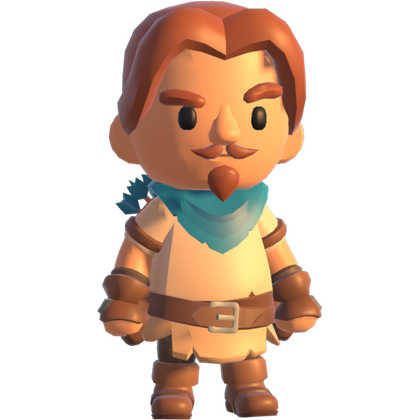

Your lantern lights the way for only a moment. Then your memory is your only compass.
Fenerin yolu yalnızca bir an aydınlatır. Sonra tek pusulan hafızan.

Lost in the dark?
Karanlıkta mı kaldın?
Write to us about a bug, a lost purchase or an idea for the game. We read every message.
Bir hata, kaybolan bir satın alma ya da oyun için bir fikir için bize yaz. Her mesajı okuyoruz.
Email supportDestek'e e-posta gönderOpens your mail app, addressed toPosta uygulaman açılır, alıcı: devfsk202@gmail.comInclude these and we can help faster
Şunları yazarsan daha hızlı yardım ederiz
- Your device model (for example, iPhone 15 or Galaxy S24)
- Your iOS or Android version
- The place and level number, and what happened
- Cihaz modelin (örneğin iPhone 15 ya da Galaxy S24)
- iOS veya Android sürümün
- Mekân ve bölüm numarası, ne olduğu
Common questions
Sık sorulanlar
I bought something on another device. How do I get it back?
Open the Shop in the game and tap "Restore purchases". Use the same Apple ID or Google account you bought it with. "No Forced Ads" and the "Starter Pack" come back; oil you already used does not.
Do I have to watch ads?
Most ads are optional: they play only when you choose one for a reward, like continuing after a loss or getting a hint. After level 6 a short ad may appear between levels, at most once every 3 wins. "No Forced Ads" or the "Starter Pack" removes these.
A level is too hard. What can I do?
Use lantern oil for a hint, or watch a short ad for a free hint. Early levels show the whole map again; later ones show the next part of the way.
Can I turn off personalized ads?
Yes, where the law requires a choice: open Settings → About → Ad preferences in the game. On iPhone you can also turn off tracking in the iOS settings. Rewards stay the same either way.
How do I delete my data?
Uninstall the game. Your progress is stored only on your device and we keep no account for you.
Başka bir cihazda satın aldığımı nasıl geri alırım?
Oyunda Mağaza'yı aç ve "Satın alımları geri yükle"ye dokun. Satın alırken kullandığın Apple ID ya da Google hesabıyla giriş yapmış ol. "Reklamsız Oyun" ve "Başlangıç Paketi" geri gelir; harcanmış yağ gelmez.
Reklam izlemek zorunda mıyım?
Reklamların çoğu isteğe bağlıdır: yalnızca bir ödül için seçersen oynar, örneğin kaybettikten sonra devam etmek ya da ipucu almak için. 6. bölümden sonra bölüm aralarında, en fazla 3 kazançta bir kısa bir reklam çıkabilir. "Reklamsız Oyun" ya da "Başlangıç Paketi" bunları kaldırır.
Bir bölüm çok zor. Ne yapabilirim?
Fener yağıyla ipucu al ya da kısa bir reklam izleyip bedava ipucu al. İlk bölümlerde harita yeniden gösterilir, sonrakilerde yolun sıradaki kısmı.
Kişiselleştirilmiş reklamları kapatabilir miyim?
Evet, yasanın seçim istediği yerlerde: oyunda Ayarlar → Hakkında → Reklam tercihleri. iPhone'da iOS ayarlarından takibi de kapatabilirsin. Ödüller her iki durumda da aynıdır.
Verilerimi nasıl silerim?
Oyunu sil. İlerlemen yalnızca cihazında saklanır, senin için bir hesap tutmayız.